Central and Mui Wo: detailed model trial
1,075 Central + 3 Mui Wo models added · 6.5 MB compressed · 1,797 candidates held for further review. Drag each comparison to reveal the government geometry. These are matching views in the actual viewer, with only the new model catalogues disabled for the baseline.
All source elevations and footprints are preserved. Ten representative Central models and all three Mui Wo additions received visual review; source names can identify one building part rather than the complete named landmark; this is not a claim that every building or region is architecturally complete.
THE HELENA MAY
landsd/109666:0 · 190 source triangles
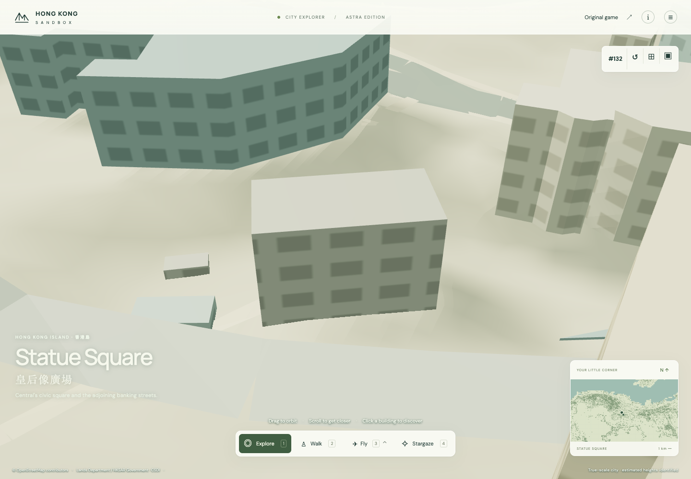
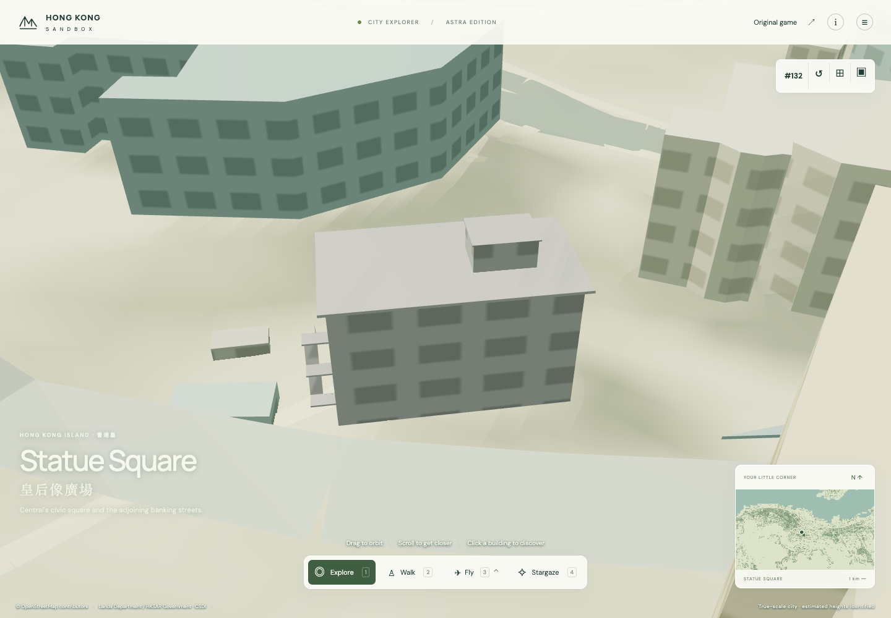
Open before · Open after
Glenealy School
landsd/109672:0 · 1,061 source triangles
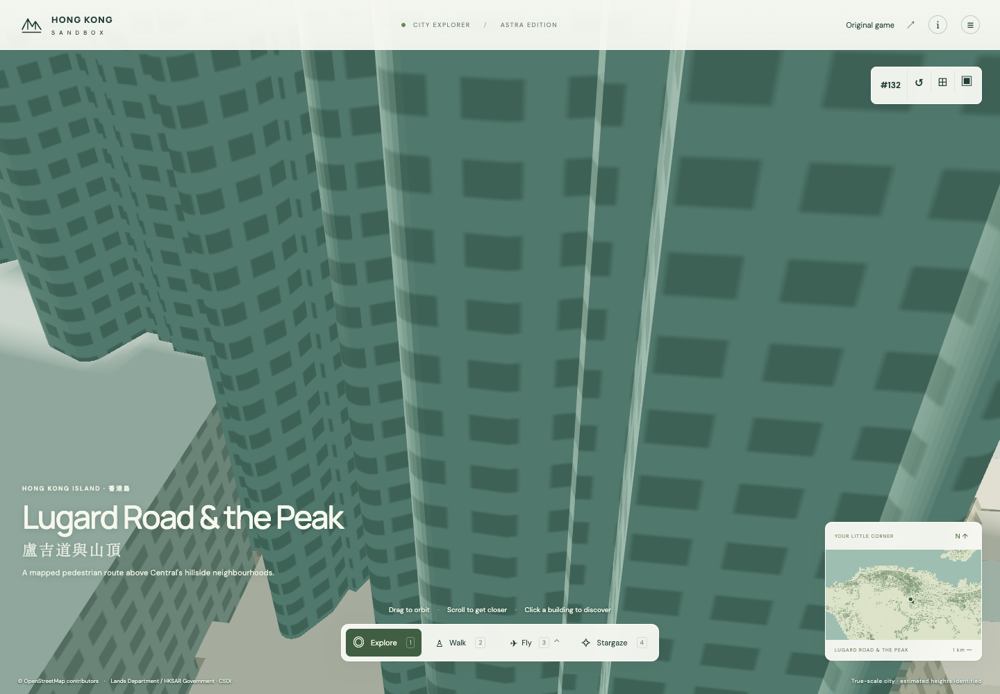
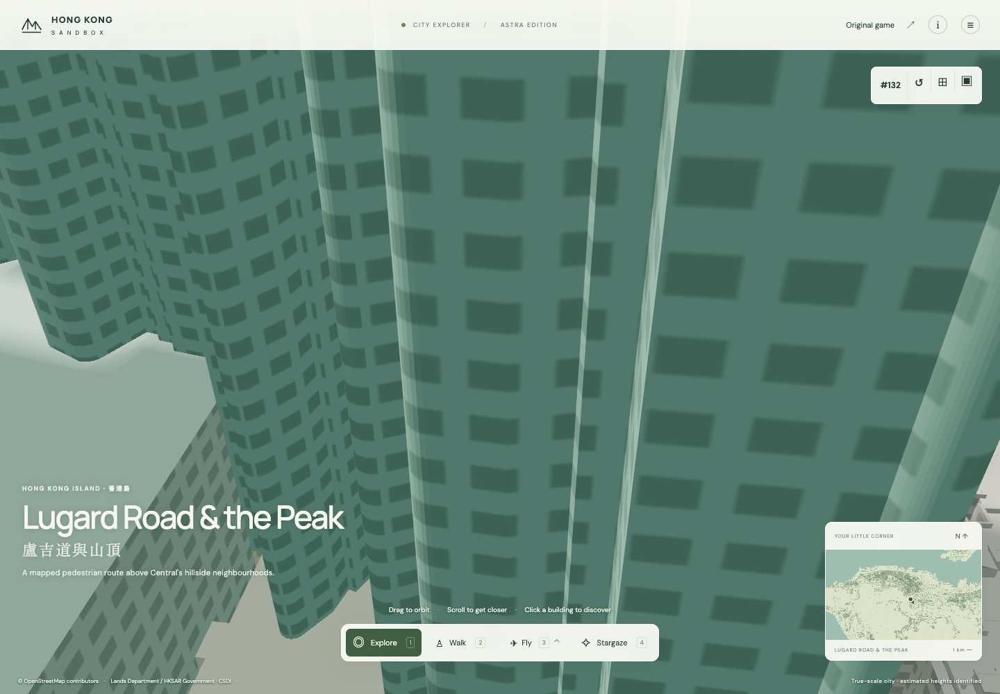
Open before · Open after
88WL
landsd/335416:0 · 244 source triangles
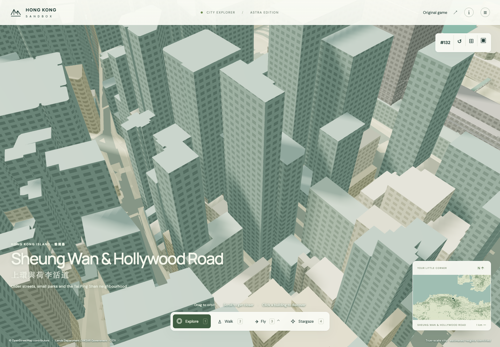
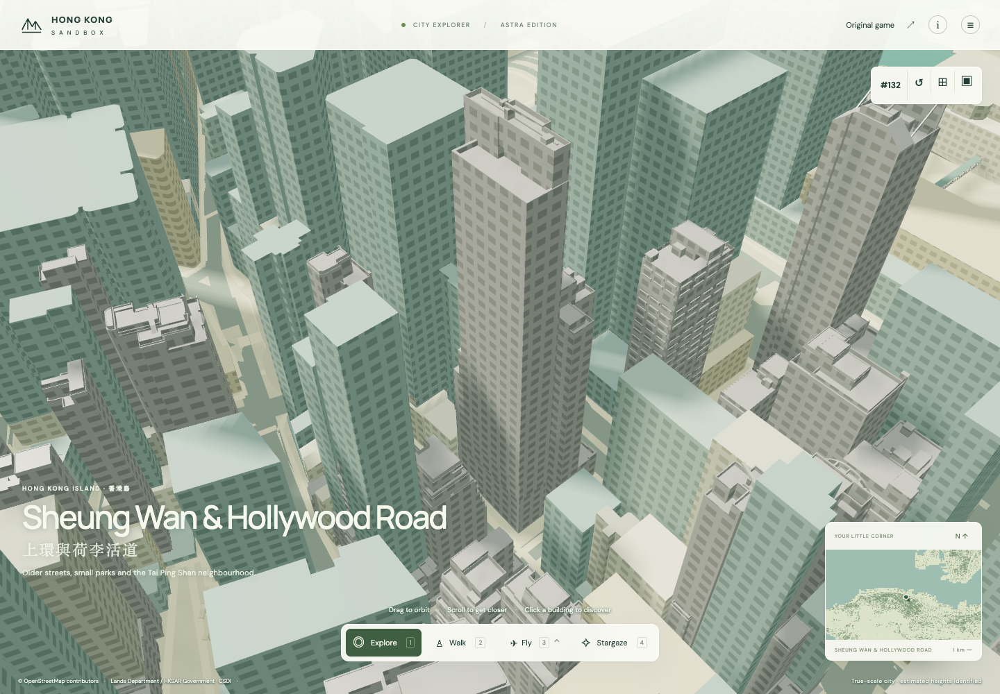
Open before · Open after
Star Ferry Car Park
landsd/100139:0 · 5,211 source triangles
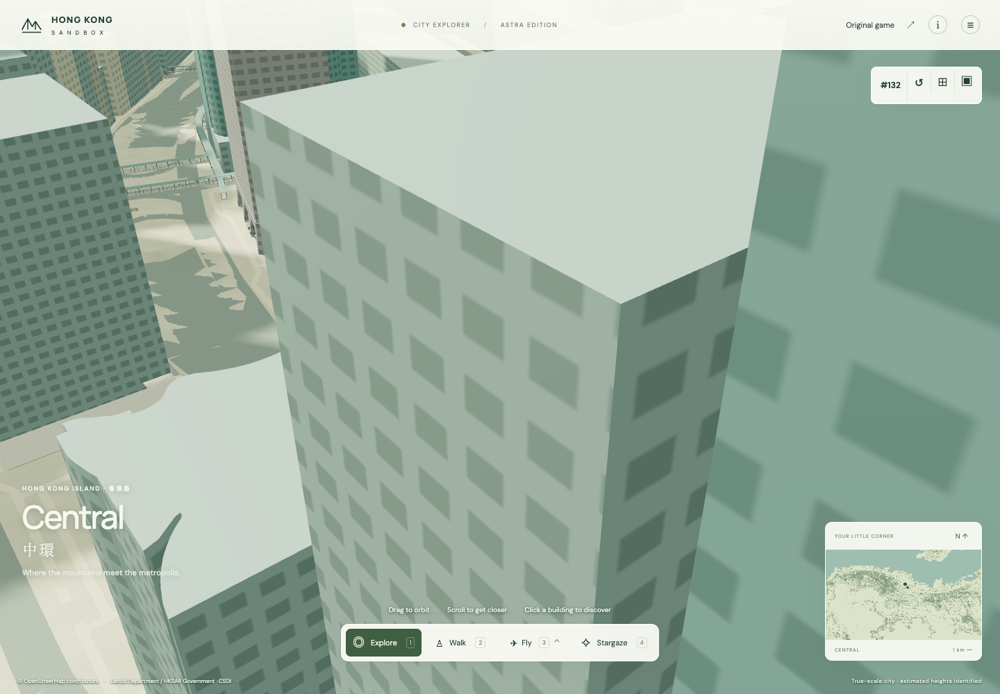
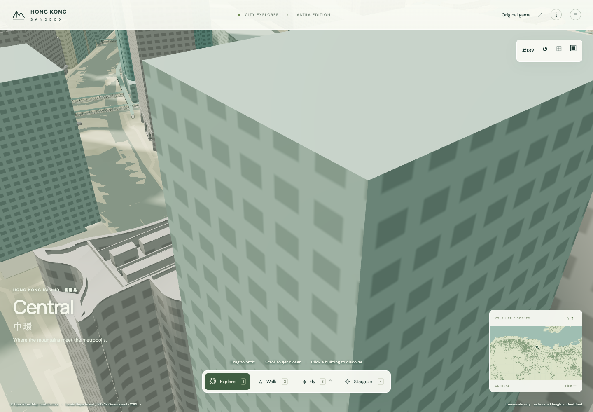
Open before · Open after
B185631510301062G0
landsd/173041:0 · 10 source triangles
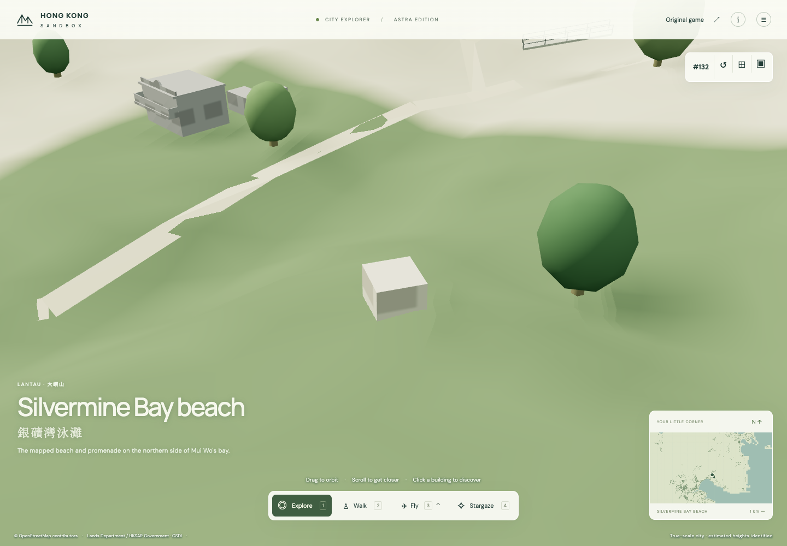
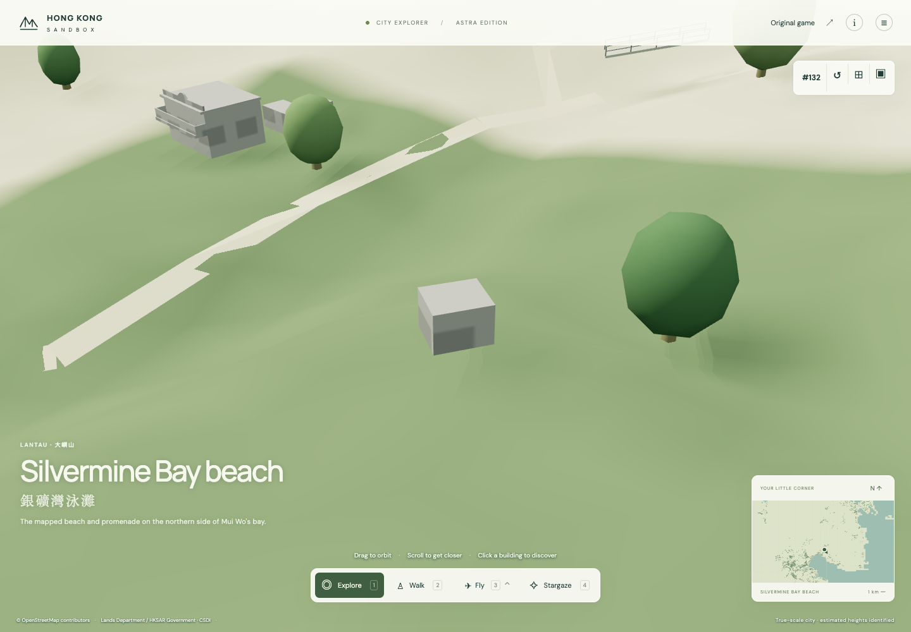
Open before · Open after
YEE YUEN
landsd/208044:0 · 10 source triangles
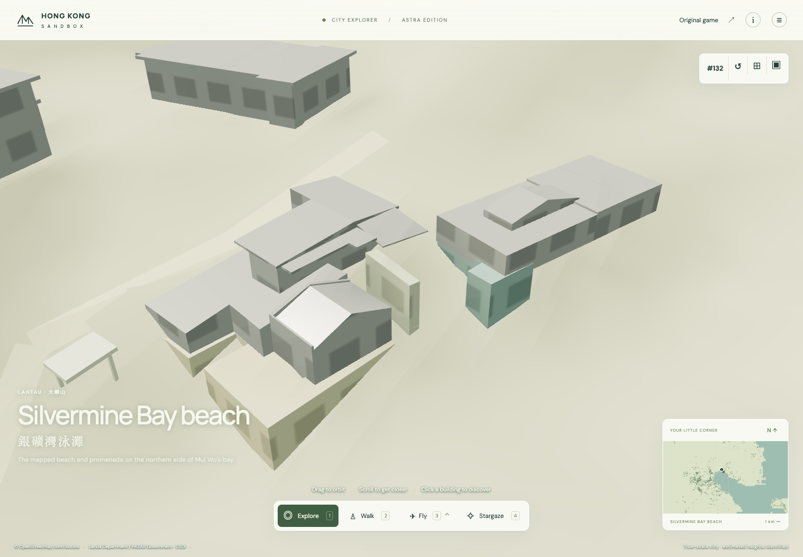
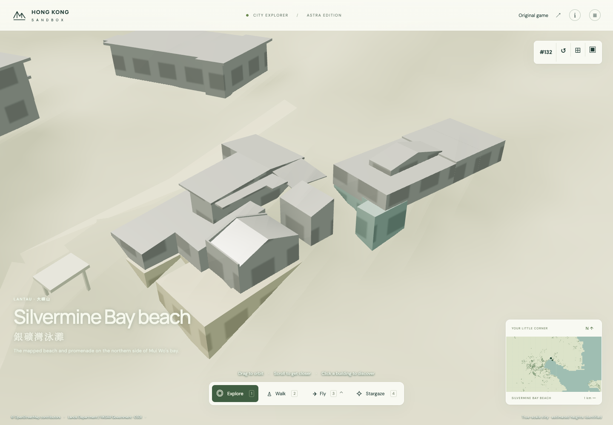
Open before · Open after
B171181507501062G0
landsd/296490:0 · 100 source triangles
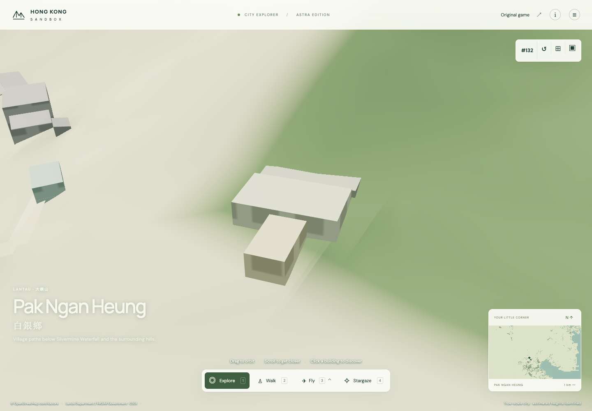
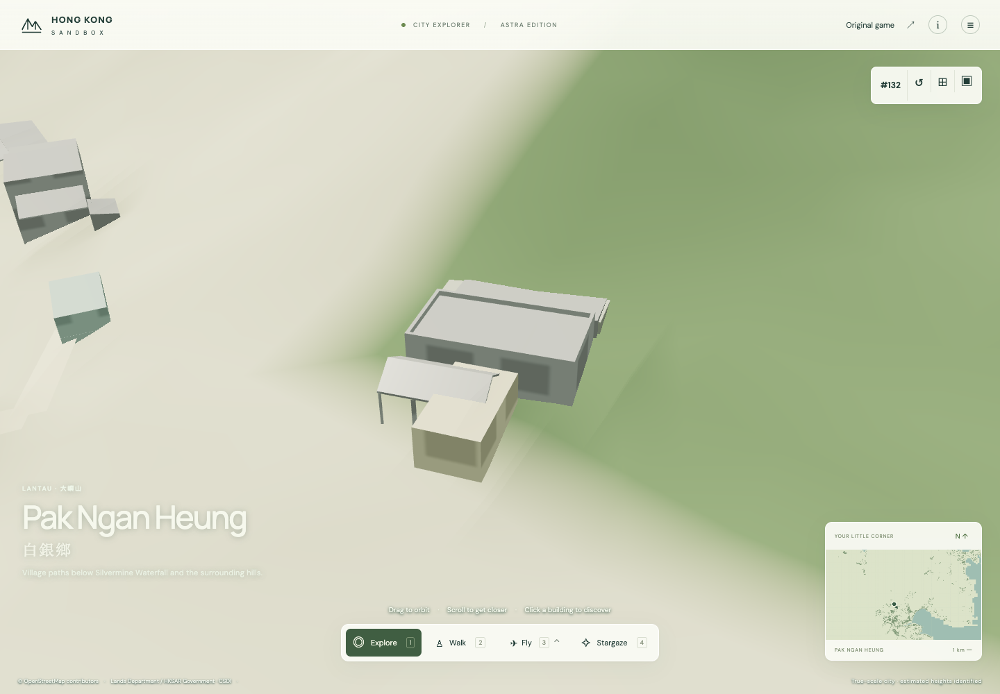
Open before · Open after